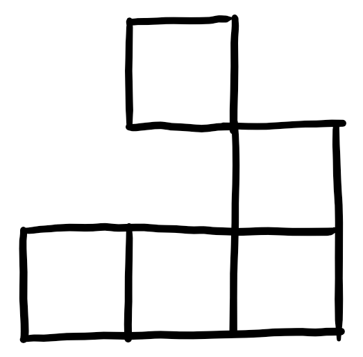

The Game of Life is a cellular automaton developed by John Conway in the 1970s. It's not really a game, considering there's no way to win, but it's a cool demo of how simple rules can be turned into wildly complicated emergent behaviors. The Game of Life is determined totally by four rules.
As a convention, "live" cells are represented above in black, while "dead" cells are represented in white.
A fairly simple and notable emergent behavior in the Game of Life is called a "glider", which looks like this:
If you draw that shape in the grid above (pause the and draw black cells with the mouse) you'll see why it's is called a glider. There are many, many other emergent behaviors worth noting, which you can find here.
In addition to being cool as hell, the Game of Life holds a special place in my heart because it was the subject of my final project in AP Computer Science. It took me two months to figure out how to use Java's graphics library, because it's awful and I hate it.
Here's a terrific Numberphile video about the Game of Life.